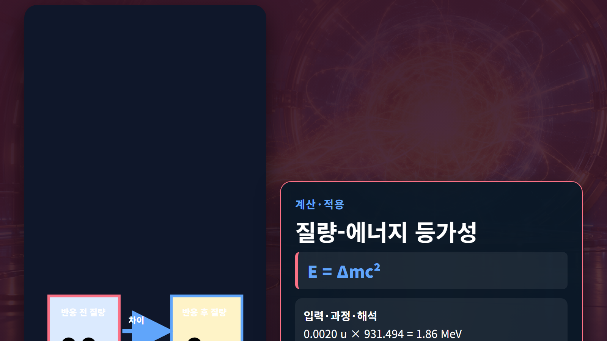

질량·에너지·핵반응 · 021
질량-에너지 등가성
정지질량 변화가 핵반응 에너지로 나타나는 관계 E=mc²
질량-에너지 등가성은 질량이 에너지와 별개의 보존량이 아니라 계의 총에너지에 포함된다는 뜻입니다. 정지한 물체의 정지에너지는 E₀=mc²이고, 핵반응 전후의 정지질량 차이는 생성물의 운동에너지와 감마선 등으로 나타납니다. 열린 계가 아니라 모든 생성물을 포함한 닫힌 계로 비교해야 합니다.
개념 정의
질량-에너지 등가성은 질량이 에너지와 별개의 보존량이 아니라 계의 총에너지에 포함된다는 뜻입니다. 정지한 물체의 정지에너지는 E₀=mc²이고, 핵반응 전후의 정지질량 차이는 생성물의 운동에너지와 감마선 등으로 나타납니다. 열린 계가 아니라 모든 생성물을 포함한 닫힌 계로 비교해야 합니다.
질량-에너지 등가성의 개념 정의에서는 핵물리의 양은 관측대상과 계의 경계를 먼저 정해야 합니다. 질량-에너지 등가성의 개념 정의에서는 같은 용어라도 원자 전체의 질량인지 원자핵만의 질량인지, 입자 하나의 에너지인지 거시계의 출력인지에 따라 계산에 포함할 항목이 달라집니다.
작동 원리
빛의 속도 c를 제곱한 값은 약 8.99×10¹⁶ m²/s²이므로 매우 작은 질량 차이도 큰 에너지에 해당합니다. 핵물리에서는 1 u·c²=931.494 MeV를 사용하면 원자질량단위에서 바로 에너지를 계산할 수 있습니다. 반응 에너지는 질량이 ‘사라진’ 양이 아니라 다른 형태로 이동한 총에너지입니다.
단계별 계산과 상황 예시
예시 1｜질량 1.0 mg=1.0×10⁻⁶ kg이 전부 에너지로 전환된다는 이상적 가정에서 E=mc²=(1.0×10⁻⁶)(2.998×10⁸)²=8.99×10¹⁰ J입니다. 이는 질량 전체 전환의 크기 비교일 뿐 실제 원자로에서 연료 1 mg이 모두 사라진다는 뜻은 아닙니다.
예시 2｜반응 전후 질량 차이가 0.0020 u이면 Q=(0.0020 u)(931.494 MeV/u)=1.86 MeV입니다. 입력 질량차의 유효숫자가 두 자리이므로 결과도 약 1.9 MeV로 해석합니다. 양의 Q는 그만큼의 순에너지가 운동에너지·광자 등에 배분됨을 뜻합니다.
| 구분 | 핵심 내용 | 판독 기준 |
|---|---|---|
| 1 u의 에너지 | 931.494 MeV | 핵반응 계산 단위 |
| 1 mg 전부 전환 | 8.99×10¹⁰ J | 이상적 상한 비교 |
| 0.0020 u 차이 | 약 1.86 MeV | 반응 Q값 |

원자력공학의 실제 적용
핵분열 출력과 연료 소모량, 붕괴열, 방사선원 에너지를 연결할 때 이 관계를 사용합니다. 다만 원자로 열출력은 각 핵분열의 회수 가능한 에너지와 반응률을 곱해 평가하며, 중성미자처럼 계 밖으로 빠지는 에너지는 열로 모두 회수되지 않습니다.
질량-에너지 등가성의 원자력공학의 실제 적용에서는 실무 계산은 보존법칙으로 1차 검산한 뒤 핵자료 라이브러리와 실험 근거로 보정합니다. 질량-에너지 등가성의 원자력공학의 실제 적용에서는 결과에는 사용한 핵종, 입사에너지, 단위, 자료 버전과 가정 조건을 함께 기록해야 다른 사람이 같은 판단을 재현할 수 있습니다.
질량-에너지 등가성의 원자력공학의 실제 적용에서는 예비평가에서는 대표값으로 물리적 규모와 방향을 확인하고, 상세평가에서는 에너지군 구조와 온도·재료조건을 실제 문제에 맞춥니다. 질량-에너지 등가성의 원자력공학의 실제 적용에서는 계산 결과가 측정값과 다르면 식을 임의로 조정하기보다 입력자료, 단위 변환, 계의 경계, 누락된 반응채널 순으로 점검합니다. 질량-에너지 등가성의 원자력공학의 실제 적용에서는 마지막에는 민감도 분석으로 어떤 입력이 결과를 지배하는지 확인합니다. 질량-에너지 등가성의 원자력공학의 실제 적용에서는 이 절차는 개념식을 안전해석이나 실험계획에 연결할 때 과도한 단순화와 단위 오류를 줄여 줍니다. 질량-에너지 등가성의 원자력공학의 실제 적용에서는 또한 계산서에는 적용범위와 제외조건을 명시하고, 독립 검산자가 원자료부터 결과까지 추적할 수 있도록 중간값을 보존합니다. 질량-에너지 등가성의 원자력공학의 실제 적용에서는 실험값이 없는 영역은 보간과 외삽을 구분하고 불확실성을 결과와 함께 제시합니다.
오해와 적용 한계
E=mc²가 ‘질량은 언제나 전부 에너지로 바뀐다’는 뜻은 아닙니다. 화학반응에도 질량 차이는 있지만 결합에너지 규모가 작아 보통 측정하기 어렵습니다. 반응물과 생성물 질량은 모두 같은 원자질량 또는 핵질량 체계로 계산해야 전자질량을 중복하거나 누락하지 않습니다.
질량-에너지 등가성의 오해와 적용 한계에서는 비유는 관계를 기억하는 데 유용하지만 실제 핵은 고전적인 공이나 행성계가 아닙니다. 질량-에너지 등가성의 오해와 적용 한계에서는 양자상태, 확률분포와 보존법칙을 훼손하지 않는 범위에서만 비유를 사용하고, 정량값은 원자료로 돌아가 검증합니다.
핵심 정리
질량-에너지 등가성은 정의, 보존관계, 적용 조건을 함께 읽어야 하는 개념입니다. 질량-에너지 등가성의 핵심 정리에서는 두 예시처럼 입력값과 단위를 먼저 쓰고 계산과 해석을 분리하면 공식 암기를 넘어 결과의 의미를 확인할 수 있습니다. 질량-에너지 등가성의 핵심 정리에서는 실제 설계에서는 핵종별 자료와 불확실성을 적용해 개념식의 한계를 보완합니다.